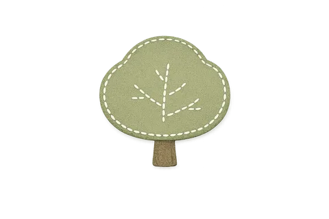

Speaking & Sharing
Speaking and sharing practice
Jo is always open to connecting with others on these journeys, because there is always more we can learn from one another.
What's open right now
Knowledge Nest is first and foremost a home for free, helpful resources
Jo is currently unavailable for independent consulting. She is open to speaking at events, and always happy to connect with other teachers and leaders to share practice.
Speaking at events
Conference sessions, keynotes and panels on the science of learning, structured literacy, curriculum, instructional coaching and leading change.
Sharing practice
Casual conversations with teachers and leaders to swap ideas, compare notes and learn from each other's journeys.
Free resources
A growing collection of articles, guides and tools, free for any teacher or leader to read, use and share.
Topics Jo speaks and writes about
Six interconnected areas of evidence-informed practice
Science of Learning
Unpacking what key research bodies, including cognitive science, tell us about how students best learn, and the implications for classroom practice.
- Explicit instruction and instructional design
- Cognitive load theory and its classroom applications
- Retrieval practice and spaced learning
- Classroom environments, routines, and cultures
- Developing a strong Tier 1 instructional model
- Instructional coaching in all key practices
- Teaching students how they learn with The Secrets of How We Learn
Science of Reading
Supporting schools to implement structured literacy approaches that align with the evidence on how children learn to read.
- Structured literacy - high-impact literacy blocks
- Big 5 of reading instruction and research
- Decodable text selection and progression
- Vocabulary and background knowledge development
- Assessment-informed reading instruction
Knowledge-Rich Curriculum
Helping schools design and implement curricula that build deep, connected knowledge across year levels and disciplines.
- Curriculum coherence and sequencing
- Schema building and connected content
- High-quality instructional materials selection
- Cross-curricular knowledge connections
- Aligning curriculum, pedagogy, and assessment
MTSS
Guiding schools to build a proactive, research-based Multi-Tiered System of Supports.
- MTSS frameworks - Tier 1, 2, 3
- Universal screening using tools such as DIBELS
- Data-based decision making at each tier
- Evidence-based intervention selection
- Building school-wide systems for support
Change Management & Implementation Science
Guiding schools through the complexities of instructional change with a structured, evidence-informed approach.
- Navigating whole-school instructional reform
- Building shared understanding and buy-in
- Developing sustainable implementation plans
- Supporting leaders through the change process
- Aligning systems and structures to support new practices
Instructional Playbooks
Partnering with schools to build practical handbooks that guide the implementation of high-impact teaching strategies.
- Building instructional playbooks anchored to school context
- Aligning with system frameworks such as VTLM 2.0
- High-impact teaching strategy implementation
- Practical, teacher-friendly resource design
- Connecting playbook content to coaching and PD
Coaching Nest
Coaching Nest is our instructional coaching platform for schools, built by Knowledge Nest Australia. Coaches capture fast drop-in notes and turn them into clear, shareable feedback, with research-based One-Pagers for every move. Coming 2027.
Let's connect
Planning an event, or keen to swap notes on practice? Jo would love to hear from you.